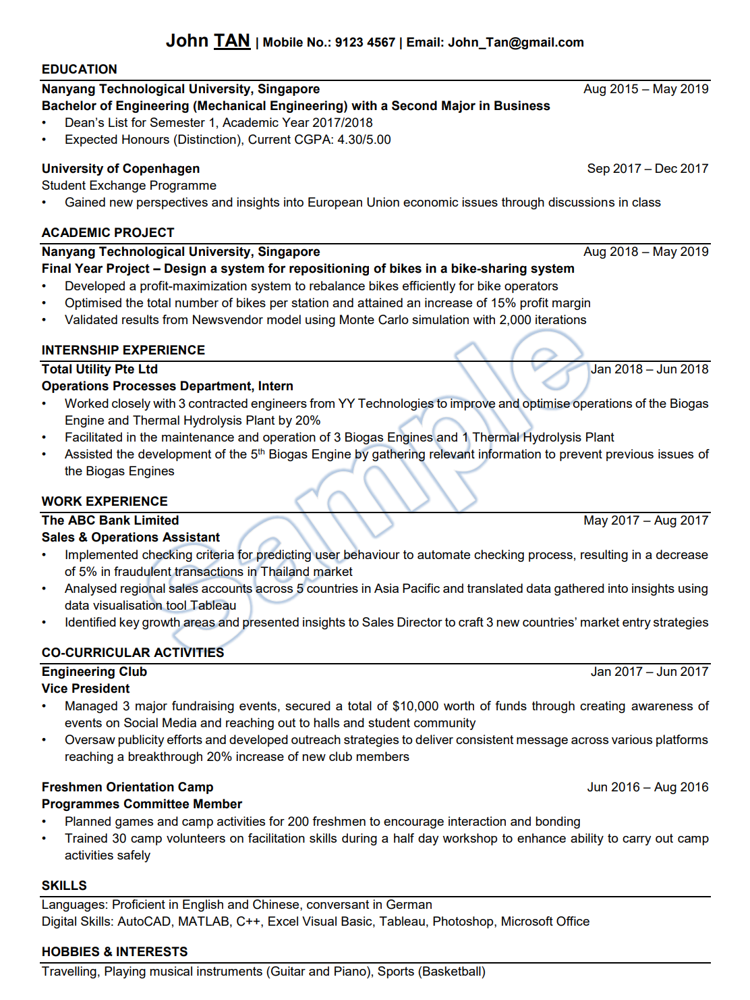

Basic Introduction
Resume Components
- Name and Contact 姓名与联系方式
- Career Objective 求职目标
- Education 教育背景
- Scholarship or Awards 荣誉奖项
- Academic Project 研究项目
- Work or Internship Experience 工作或实习经验
- Co-curricular Activities 学生活动
- Voluntary or Social Work Experience 志愿或社会活动
- Language and Digital Skills 语言与计算机技能
- Hobbies and Interests 兴趣爱好

Resume Sample

Resume Checklist

- Keep your Resume to preferably 1 page, maximum 2 pages
- Recommended to submit a PDF file to employers (but subject to employers' instructions)
- Format and layout to be professional, clean and simple
- Be consistent with alignment (left / right) and duration (mmm/yyyy)
- Use black font with white background, balance text and white space
- Use recommended font type and font size e.g. Arial 11-12
- Have 3 to 4 bullet points per experience
- Use past tense (except current experiences)
- No weird email address